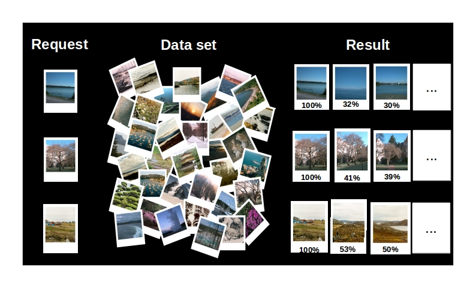

Our Content-based image retrieval (CBIR) system is an opensource (Apache 2) tool divided in two apps: CBIRest and CBIRetrieval.
CBIR server with a REST API. It uses the CBIRetrieval. Run it as a Java WAR and you will able to perform HTTP request to add new images, to search similar images, manage data...
Java library package with self-executable. Run it as a simple app (command line) or use the JAR in your own JVM app (java import). The package provides a jar file and a set of command line scripts.
List of contributors: ROLLUS Loïc, MAREE Raphaël
This software is based on the algorithm described in this original research article:
Incremental Indexing and Distributed Image Search using Shared Randomized Vocabularies